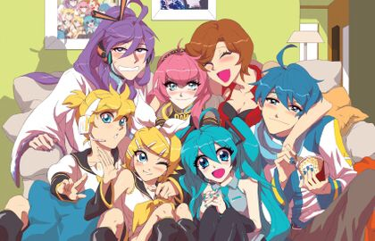
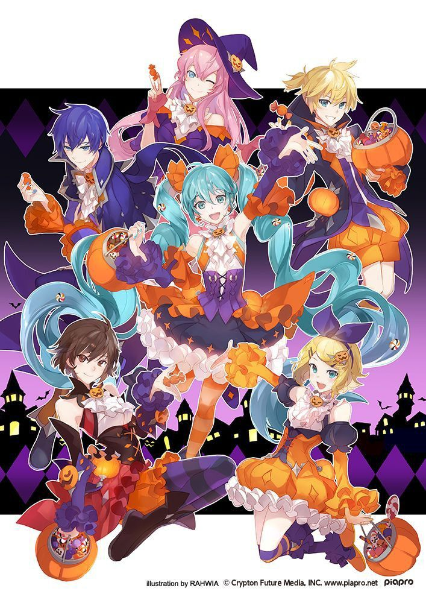
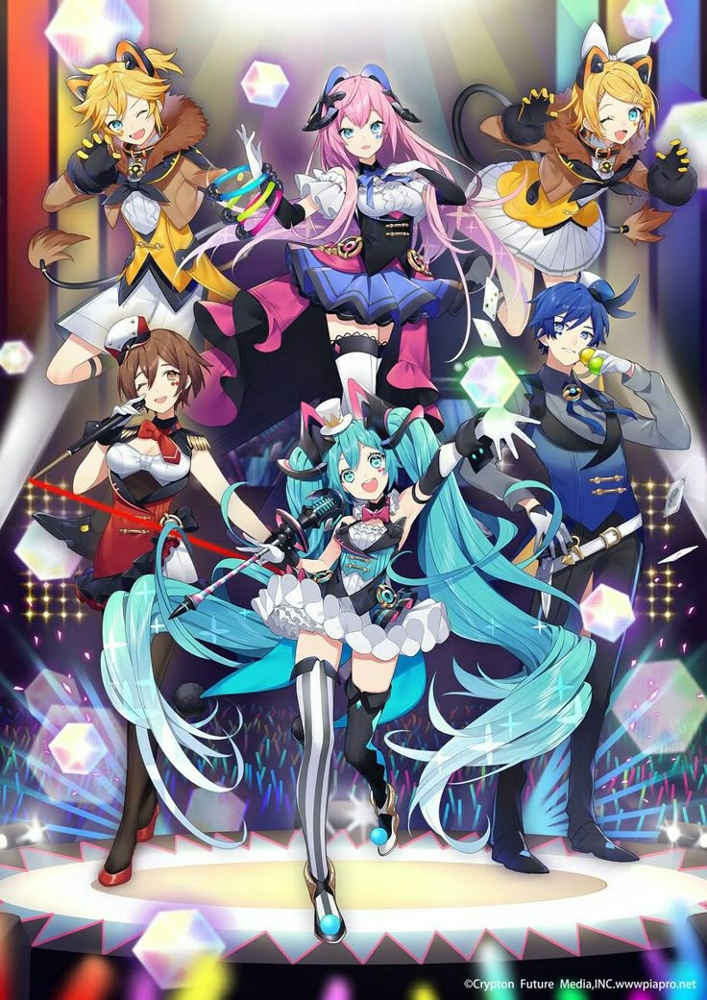
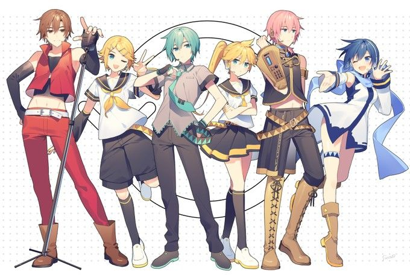
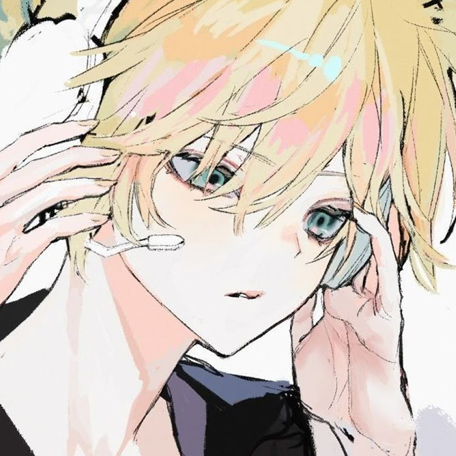
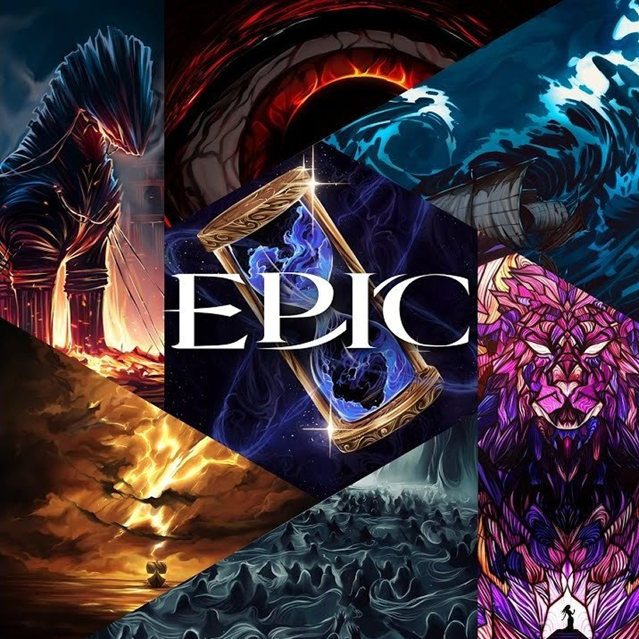
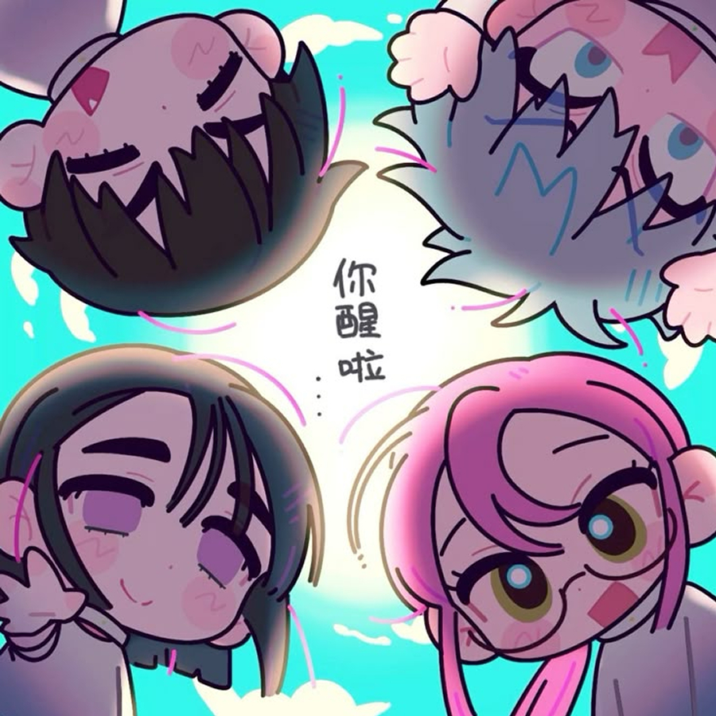
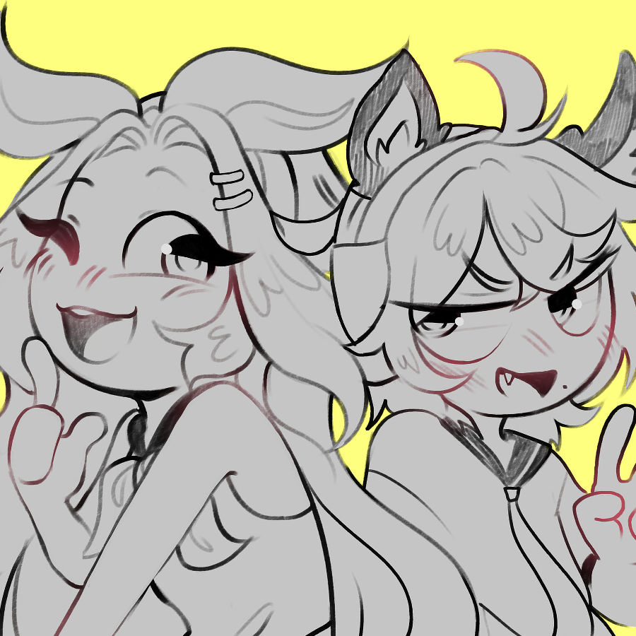

Vocaloid
LEN
Epic the Musical
Alien Stage
Ozzu-Krex y Kei
VOCALOID no es solo un software de síntesis de voz, es una revolución que transformó la música digital y creó un fenómeno cultural sin precedentes. Yamaha lanzó la primera versión en 2004, pero todo cambió en 2007 con Hatsune Miku, la idol virtual que se convirtió en un ícono global. Su imagen futurista y su voz sintética pero expresiva hicieron que miles de productores independientes comenzaran a crear música con ella, impulsando el crecimiento de toda una comunidad creativa. Junto a ella surgieron otros personajes inolvidables como Kagamine Rin & Len, con su energía explosiva, y Megurine Luka, con su tono elegante y versátil.
Lo que lo hace único es su comunidad. No es solo un software, es una plataforma donde músicos, ilustradores y animadores colaboran para dar vida a un universo musical sin fronteras. Canciones como World is Mine, Rolling Girl y Senbonzakura se convirtieron en himnos de internet, inspirando videos, ilustraciones y hasta conciertos en vivo con hologramas. Aquí no hay intermediarios: cualquiera con creatividad y una computadora puede producir y compartir su música con el mundo.
Lejos de desaparecer, VOCALOID sigue evolucionando con cada nueva generación. Nuevas voces, tecnologías de síntesis mejoradas y una comunidad que no deja de innovar han permitido que el movimiento siga creciendo. Desde el electro-pop hasta el rock y el jazz experimental!
Len...No es solo una voz sintetizada, es una presencia, un símbolo y, para muchos, la mejor voz de los bancos de su rama. Junto a su hermana Rin, Len llegó en 2007 como la segunda apuesta de Crypton Future Media después de Hatsune Miku, pero rápidamente se ganó su propio lugar en el corazón de los fans. Su voz juvenil, versátil y llena de emoción lo convirtió en el favorito de innumerables productores, explorando desde canciones alegres y explosivas hasta historias trágicas.
Len no es solo un personaje más. Tiene una estética icónica, una voz que puede sonar tanto angelical como rebelde y una personalidad que se ha definido a través de los años en cientos de canciones. Desde los clásicos como Servant of Evil, donde protagoniza una historia de sacrificio y tragedia, hasta temas llenos de energía como Lost Time Memory y Butterfly on Your Right Shoulder, Len ha demostrado ser capaz de transmitir emociones como pocos. Su capacidad para adaptarse a cualquier estilo, desde baladas melancólicas hasta rock intenso, hace que siempre haya una canción de Len para cada estado de ánimo.
Pero lo que realmente lo hace especial es la pasión que despierta en sus seguidores. No es solo una voz digital, es un ícono que ha inspirado ilustraciones, animaciones y un sinfín de reinterpretaciones a lo largo de los años. Su popularidad no ha hecho más que crecer, y cada nueva canción en la que aparece es un recordatorio de por qué tantos lo consideran su VOCALOID favorito. Amo a len que puedo decir xd.

Ok, este es nuevo...era es escéptica al proyecto pero me conquisto de una forma que no puedo ni describir. Imaginen una mezcla de épica, melodías profundas, y una producción de otro nivel que te hace sentir como si estuvieras viviendo una película de fantasía en cada canción. Es una travesía sonora que te transporta a otro mundo, con una atmósfera tan única que cada pista te deja deseando más.
Lo que me tiene tan enganchado de EPIC OF MUSICAL es cómo juega con géneros, fusionando lo clásico con lo moderno, y cómo logra despertar una montaña rusa de emociones con cada tema. Las letras son profundas, con historias que van más allá de lo común, cada una contada de una manera tan envolvente que te atrapan desde el primer segundo. ¡Es imposible escuchar una sola vez sin querer repetirlo una y otra vez! Y la producción es simplemente deslumbrante, todo está tan cuidado al detalle que cada instrumento, cada armonía, y cada transición te dejan sin aliento.
Definitivamente, esto no es solo una nueva obsesión musical, es la obsesión. Con cada canción descubro un pedazo más de la magia que tiene este proyecto, y siento que lo que estoy viviendo no es solo una fase, sino una experiencia única. Si no has escuchado HAZLO!
Esta obra es una joya que se te mete en la cabeza y no sale más. Desde que descubrí este universo, me obsesioné de inmediato con cada detalle, y no es para menos. Cada personaje tiene una profundidad increíble, ¡y la autora ni se diga! Es como si cada línea estuviera pensada para deslumbrarte. La historia, que empieza con esa mezcla perfecta de misterio y ciencia ficción, te atrapa desde el minuto uno, pero lo que realmente te hace flipar es el nivel de creatividad que hay detrás. ¡Es una montaña rusa de emociones con giros que nadie ve venir!
Lo que realmente me tiene enganchado es la ambientación y cómo todo, absolutamente todo, está tan bien cuidado. Los planetas, la cultura alienígena, las interacciones entre personajes… ¡es como si estuvieras viviendo en ese mundo! Además, la autora tiene un talento para crear mundos tan ricos en detalles que cada página te deja pensando en lo que vendrá. Y si hablamos de la música… ¡ni se diga! La banda sonora es otro nivel, te transporta aún más a ese espacio único y épico. Si aún no has empezado con ALIEN STAGE, realmente te estás perdiendo una de las mejores experiencias de la ciencia ficción moderna. ¡Ya te lo digo, es imprescindible!

Solo por si no se notaba mio cariño a estos dos individuos owo. Es que literalmente, su sola existencia me da literalmente ganas de vivir. Ver sus directos y escuchar sus voces es una experiencia que no solo te llega al corazón, sino que te rompe y te lo reconstruye de una manera tan única que te deja sin palabras. Cada nota de sus canciones resuena con una energía tan profunda que no sabes si quieres bailar, llorar o simplemente gritar de lo increíble que es todo. ¡Es un combustible emocional!
Lo que más me apasiona es cómo cada canción tiene una atmósfera propia y una historia que te absorbe por completo. Krexvt es todo lo que uno podría soñar en cuanto a letras, composición y hasta el estilo con el que entregan su música. ¡Es un equilibrio perfecto de sonidos envolventes, con esa mezcla entre lo experimental y lo emocional que te atrapa en un segundo! Y si hablamos de Keirame Hichudokune… es que su voz es simplemente celestial, tan cautivadora que es como un abrazo sonoro que te envuelve y te hace olvidar el resto del mundo. Cada palabra, cada acorde te deja pensando, reflexionando, porque todo en su música está hecho para emocionarte hasta los huesos.